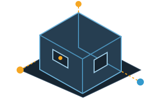

IOBROKER · 3D HOME
Ваш план. Ваши точки данных.
← Назад к интерфейсу1. Подключить устройства
«Подключить устройства» открывает дерево объектов ioBroker. Раскройте адаптеры, экземпляры и каналы или ищите по ID объекта и имени. Фильтры по роли и комнате сужают выбор. Отметьте точки данных и подключите их кнопкой «Применить». Уже подключённые устройства нельзя выбрать повторно. Свет из нескольких точек данных (выключатель, диммер, цвет, оттенок белого) появляется там одной записью 💡, телевизор или колонка — одной записью 🎵 с громкостью, названием, приложением и входом.
2. Редактирование плана
В редакторе создайте этажи, комнаты, двери и мебель. Сопоставьте комнаты с комнатами ioBroker. Через значок выбора ▤ выберите точку данных в дереве объектов: уже подключённые, подходящие к типу устройства, идут первыми, ниже все остальные; ещё не подключённая подключается при выборе. «↻ Обновить» заново читает точки данных.
Тип устройства и части: У устройства в редакторе под его точкой данных стоит «Тип устройства» (свет, выключатель, рольставни/жалюзи/маркиза, отопление/кондиционер, вентилятор, замок, медиа, датчик) и ниже «Точки данных устройства»: каждая часть со своей точкой данных, «Выбрать …» и × для удаления; редкие части — в «Ещё части». Другой тип сам ищет свои части рядом с точкой данных (по роли и имени); чего он не нашёл, выберите через «Выбрать …» в браузере объектов. Пример — LED-лента: тип «Свет», к нему выключатель, яркость, цвет (#RRGGBB, красный/зелёный/синий или оттенок/насыщенность) и цветовая температура (Кельвины, миреды или 0–100 %). 3D-вид предлагает то, что есть у устройства: без цвета нет выбора цвета, без цветовой температуры нет оттенка белого.
Подложка (изображение плана): «Масштаб по линейке» масштабирует изображение по отрезку известной длины. Если скан растянут в одном направлении, отметьте «Только в этом направлении»: тогда меняется только ширина или только глубина изображения – смотря вдоль какой стороны идёт отрезок; поэтому сначала измерьте отрезок поперёк, затем вдоль. «Глубина растянута (%)» показывает соотношение, его можно ввести и вручную.
3. Просмотр и управление
В 3D-виде откройте комнату и управляйте её устройствами. Значения приходят сразу при каждом изменении через соединение адаптера web. Сложным устройствам могут понадобиться дополнительные сопоставления для яркости, температуры или положения; они находятся в разделе «Расширенные сопоставления».
Стеклянные карточки: В меню «Отображение» выбирается, как появляются карточки над устройствами: «Карточки всегда», «Карточки при наведении» (на устройстве только светящаяся точка; карточка видна, пока мышь на точке или на карточке, щелчок или касание точки оставляет её открытой, повторное — закрывает) или «Без карточек». Выбор сохраняется в этом браузере; по умолчанию карточки появляются при наведении.
Телевизор: YouTube, Netflix, HDMI: Долгое нажатие на телевизор или колонку (мышью: удерживать кнопку) открывает быстрое меню с воспроизведением, громкостью и в разделе «Воспроизвести» — кнопкой для каждого приложения и каждого входа. Касание записывает значение в точку данных приложения (роль media.app) или входа (media.input); карточка показывает запущенное приложение. Кнопки берутся из списка значений точки данных (common.states). Если у устройства нет такой точки данных, выберите в редакторе в «Ещё части» «Приложение (YouTube …)» или «Вход (HDMI …)».
Лодки
В ⚙ → Дом: «Курс по компасу» поворачивает план вместе с лодкой, «Позиция» берёт GPS для положения солнца, «Море вокруг лодки» добавляет воду по ватерлинию, с волнами по датчикам высоты и длины волны. Предмет мебели «Якорь» (Снаружи) ставится впереди на носовой роульс; без поворота его цепь идёт на плане вверх. По счётчику цепи и глубине воды он лежит в роульсе (меньше 0,3 m цепи), висит на цепи или лежит на дне. Расстояние до якоря (GPS) натягивает цепь, а радиус тревоги появляется кругом на воде. С датчиком «Скорость» (лаг или SOG) вода обтекает корпус, с носовой волной и кильватерным следом.
В редакторе в разделе Мебель → «Лодка»: Бак (выберите содержимое, уровень в % и при желании литры; жёлтый, когда запас подходит к концу или фекальный бак заполняется), Руль (на баллер руля, с углом перекладки в °, положительный = правый борт), Привод с гребным винтом (под двигатель, с оборотами) и Ходовой огонь (якорный огонь, топовый огонь, левый борт, правый борт, двухцветный фонарь, кормовой огонь; со своим выключателем; высота над этажом, например 18 m для топа мачты, и при желании сама мачта). Руль и гребной винт висят под этажом, на котором стоят. Щелчок по баку, рулю, приводу, люку или ходовому огню открывает сведения о его датчике с историей, если её записывает адаптер истории. Газовый баллон (поиск «газ» или «gas», также для дома, гриля или кемпинга) — такой же бак с содержимым «Газ»: баллон с вентилем и защитным кольцом, сжиженный газ внутри до уровня заполнения. Кроме уровня он может показывать содержимое; если оно приходит с весов в кг, оно показывается в кг.
Люк (прямоугольный со скруглёнными углами или круглый) ставится на палубу. С контактом (открыт/закрыт) его тонированная крышка стоит под углом открытия (по умолчанию 70°) на двух газовых упорах; без поворота петли на плане находятся вверху. Кроме того, угол может давать точка данных («Угол из точки данных», в ° или в %, тогда до угла открытия): крышка открыта настолько, насколько она сообщает, и рядом показан угол. Без контакта люк тогда считается открытым от 1°. Если идёт дождь, а люк открыт, появляется то же предупреждение, что и при открытых окнах.
Окна, открывающиеся вверх: откидное окно (петли сверху) имеет собственный угол открытия и может открываться также внутрь. Стиль окна «Иллюминатор / круглый» рисует раму и створку скруглёнными — круглыми, если окно одинаково по ширине и высоте, иначе со скруглёнными концами — и открывается вверх как клапан (по умолчанию 60°). В откинутом положении оба открываются не более чем примерно на 26°.
Ветер и погода
В ⚙ → Погода и предупреждения можно выбрать датчики ветра (kn, km/h или m/s), направления ветра (откуда дует, 0 = север), порывов и атмосферного давления. Без них, или если датчик ничего не сообщает в течение часа, действуют ветер и давление погодной сущности. Указатель ветра (Мебель → Снаружи: флюгер на топе мачты, ветровой конус или флаг – в поле «Какой флаг», например, Германия, Австрия, Швейцария, Франция, Италия, Россия, Украина, другие страны или ЕС) поворачивается по ветру и показывает над собой ветер, направление и баллы Бофорта; порывы раскачивают его, а ветровой конус встаёт горизонтально от 15 kn.
На море волны бегут по ветру, от 4 Bft — с барашками; порывы покрывают воду рябью, дождь оставляет круги. В естественных стилях (например, «Уютный») палуба и крыши мокнут под дождём, а при солнце и разорванной облачности тени облаков плывут с ветром по морю, палубе и крышам. Если погодный эффект «Туман» включён, туман появляется также по дальности видимости или по тому, насколько температура близка к точке росы. Если атмосферное давление за 3 часа падает на 3 hPa или больше, вверху появляется предупреждение (от 6 hPa — штормовое предупреждение), и небо темнеет.
Вокруг дома
Виды (меню «Показать»): «Диагностика» окрашивает комнаты по их устройствам — красным, если какое-то из них недоступно, жёлтым при разряженной батарее (20 % или меньше), — и показывает значки у устройств и список внизу справа. Если навести мышь на значок (или коснуться его), подсказка сообщит, что это за устройство, в чём проблема и когда оно последний раз выходило на связь. Точки данных батареи, LOWBAT, UNREACH и доступности устройства находятся автоматически рядом с его точкой данных, как и то, работает ли его адаптер и подключён ли он. Устройства на батарейках, которые спят между двумя сообщениями (например, Shelly H&T), считаются недоступными только после 48 часов без сообщений. В ⚙ → Погода и предупреждения вместо этого можно задать «Недоступно после … минут без обновления» (например, 15 для датчиков, которые отправляют данные каждые 5 минут; контактам, которые отправляют данные только при изменении, нужно больше) и отключить показ комнат без проблем (зелёным, с «✓ n OK») — тогда «Диагностика» показывает только проблемы. С параметром «Всегда показывать проблемы с батареей и связью у устройства» 🔋 и ⚠ видны у устройства и вне «Диагностики», а также у люка или бака с собственным датчиком. Для отдельного устройства это можно настроить иначе в редакторе у самого устройства (под его точкой данных): как сообщает устройство, после … минут без обновления или никогда, а также «Проверять, только пока его адаптер подключён» — например, для значений NMEA, приборы которых выключаются вместе с лодкой. Это действует для всего устройства, включая его другие точки данных. Ниже указана батарея, которая учитывается, и откуда она взята: найдена type-detector, предположена по имени и роли или выбрана вручную. Если она неверна, выберите кнопкой «Выбрать …» правильную точку данных (число: заряд в %, true/false: батарея разряжена) или «Нет батареи» для устройств, питающихся от бортовой сети; «Автоматически» снова включает автоматический поиск. «✓ 3 OK» у комнаты означает, что три устройства там в порядке; при наведении мыши на табличку комнаты видно, какие именно. Датчик дыма, газа или воды предупреждает о комнате, в которой он размещён: комната мигает красным, а вверху появляется предупреждение. У устройства в редакторе в разделе «Свой значок» выберите значок из ряда (или введите имя Material Design), а в «Цвет при активности» — цвет, которым он светится, пока активен. «Движение» окрашивает комнаты по тому, как часто там сегодня срабатывал датчик движения (по истории).
Проветрить: по температуре и влажности комнаты (и наружной температуре погодной сущности) оценивается влажность в самом холодном углу у наружных стен; от 70 % углы темнеют, от 80 % (плесень) появляется «Проветрить». Отключается в ⚙ → Погода и предупреждения → «Показывать риск плесени» (для воздуха у открытых окон есть отдельный переключатель). Открытые окна с контактом показывают воздух: с наветренной стороны он входит, с другой — выходит. Если в комнате работает отопление (термостат в комнате или радиатор с термостатом), наружу уходит красное тепло, а через 10 минут появляется предупреждение.
Сад (Мебель → Снаружи): робот-газонокосилка стоит на своей зарядной станции; по её статусу (код Worx, активность Husqvarna или текст) во время кошения она ездит полосами по газону и оставляет за собой полосы. Дождеватель разбрызгивает воду, пока его клапан открыт; с датчиком влажности почвы газон желтеет, когда сухо.
Автомобили (Мебель → Транспорт): седан, хэтчбек и фургон, цвет на выбор. С точкой данных «Дома» (трекер, датчик в гараже, вкл/выкл) автомобиль заезжает на место задним ходом, когда приезжает, и уезжает, когда покидает дом; тогда остаётся разметка его места.
В доме (Мебель): винтовая лестница (Лестницы и перила; при установке доходит до следующего этажа и вырезает там круглый проём, «Отразить» поворачивает её в другую сторону), каминная печь (Отопление и климат; с дымоходной трубой до заданной высоты, до 1,2 м без неё), бак для печного топлива (Отопление и климат; бак лодки с содержимым «печное топливо»: уровень в % и при желании литры, жёлтый ниже 15 %), дымовая труба (Архитектура; с «высотой над полом» может стоять на крыше) и сауна (Ванная; кабина со стеклянной дверью, полками и печью, открытая сверху). А также перила (Лестницы и перила; стойки, балясины и поручень, например у галереи или лестничного проёма), наружная лестница (Сад и улица; сплошные каменные ступени, поднимающиеся назад; её высота – перепад уровней) и приямок (Сад и улица; ставится открытой задней стороной к стене дома перед окном подвала, высота – от пола этажа до решётки; он вырезает своё отверстие в площадке снаружи, например в газоне на склоне). Рельеф: площадка снаружи, поднятая над землёй «смещением по высоте» – приподнятая терраса, ровный участок на склоне, – засыпана до земли; с «уклоном» она становится откосом. В «Углах» у каждого угла своя «Высота» над площадкой: между ними площадка идёт прямо по краям и плавно изогнута внутри – склон, поднимающийся в одну сторону, впадина, откос в углу. На плане высота стоит рядом с номером угла. Если такая площадка лежит заметно (более чем на полметра) выше земли у дома, этаж там стоит в грунте: грунт поднимается до площадки, а окна ниже получают приямок – если только у них нет собственного предмета «Приямок» и «Приямок» у окна выключен. Деревья и кусты стоят на той площадке, на которой посажены. Полуэтажи (split level): каждый марш – прямая «Лестница» на том этаже, где он начинается внизу, высотой до уровня, на который он приходит, – из гаража на первый этаж, оттуда на полуэтаж и дальше в холл. Марши снизу открыты, один может проходить под другим; каждый вырезает проём в полу этажа над ним. Площадка – комната полуэтажа, у которой стена к маршам имеет высоту 0 в «Высоты стен»; «Проём в полу» убирает пол над лестничной клеткой. Сплит-уровень внутри этажа: если выше лежит только часть этажа – обеденная зона на три ступени выше гостиной, – отдельный этаж не нужен: укажите у комнаты «Пол выше (m)» (до 3 m). Её пол и ступень поднимаются на эту высоту, мебель, окна и двери комнаты считаются от её пола, и прогулка тоже поднимается. Потолок остаётся; чтобы высота помещения не изменилась, увеличьте «Высоту потолка» на то же значение. Ступени – «Лестница» в нижней комнате. Стена: площадка снаружи «Стена» – каменный блок своей высоты: садовая стена или подпорная стенка, за которой склон поднимается выше. Врезка в крышу: терраса, лежащая в крыше, – это «Балкон» на мансардном этаже с переключателем «Врезка в крышу». Над ней крыша открыта; по её свободным краям стоят стены от пола до крыши – по бокам щёки, спереди парапет. Где стена высотой с перила, перил там нет. Саму крышу над ней рисуют целиком, без разрыва. Фронтонные окна до крыши: у окна или двери в стене под крышей переключатель «Остекление до крыши» ставит над ними импост, а выше – глухое остекление до ската, до самого конька, если он над ними. «Высота» – это высота окна с его створками. Перила балкона стоят только там, где есть перепад: не у стены дома и не там, где площадка снаружи – например, сад на склоне – подходит на том же уровне. Второй свет и окна во фронтоне: если комната открыта до крыши, нарисуйте над ней на этаже выше комнату «Второй свет» и уберите её пол «Проёмом в полу». Её стены доходят до крыши – фронтон и стенки мансарды – и принимают окна; окно заканчивается под скатом. Стены к соседним комнатам на этом этаже внутренние, в том числе с окном в неё.
В ⚙ → Погода и предупреждения: «Предупреждение о непогоде» (уровень 1–4 или слова вроде «severe», например от адаптера DWD) окрашивает рамку и баннер. «Цена электроэнергии» (иначе тариф из «Энергии») заставляет дом светиться зелёным, когда она низкая по сравнению с остальным днём, и красным, когда высокая; с «Прогнозом цен» (JSON-список со временем начала и ценой, например от Tibber) на панели энергии показан самый дешёвый час. «Расход воды» (иначе счётчик воды из «Энергии»): если вода течёт дольше 30 минут, появляется предупреждение. Душ, ванна и раковина показывают текущую воду по собственному датчику или клапану либо, если это выбрано, пока считает счётчик воды. Если датчик протечки сообщает об утечке, вода в комнате поднимается.
Колонки и телевизоры, которые сейчас играют, испускают кольца в зависимости от громкости, датчики шума (dB) — от 50 dB.
Свои 3D-объекты
Если нужного предмета мебели нет, можно вставить свою модель: в редакторе в разделе «Мебель» поставить «Свой 3D-объект» (поиск «3D») и в поле «3D-модель» загрузить файл или выбрать уже загруженную модель. Лучше всего GLB (glTF 2.0 в одном файле): он сохраняет цвета и текстуры и задан в метрах. Его экспортируют Blender, SketchUp, Fusion, Onshape и многие библиотеки моделей. glTF подходит, только если геометрия и изображения находятся внутри файла; модели, сжатые Draco, и текстуры KTX2 страница прочитать не может – экспортируйте без сжатия или с PNG/JPEG. OBJ и STL отображаются одним цветом; единиц у них нет, поэтому: размер больше 8 считается в сантиметрах (OBJ) или миллиметрах (STL), больше 500 – в миллиметрах. Файл – не более 20 МБ и 2 миллионов треугольников; при более чем 300 000 треугольников 3D-вид на планшетах может подтормаживать.
Модель стоит нижней стороной на полу, её передняя сторона (в Blender −Y, в glTF +Z) на плане смотрит вниз. При загрузке ширина, глубина и высота принимают исходный размер модели; если их изменить, модель растягивается, «Исходный размер» возвращает его. Поворот, зеркалирование и «Высота над полом» – как у любой мебели. Одну модель можно использовать в нескольких местах и планах. Как любое устройство, её можно связать с точкой данных; касание переключает её. В тёмных стилях у неё светящиеся рёбра. Экспорт проекта и резервная копия забирают модели с собой; «Удалить неиспользуемые модели» удаляет файлы, которые больше не используются ни в одном плане (и в корзине тоже).
Машина времени
«Машина времени» показывает дом в более ранний момент времени. Значения берутся из адаптеров истории ioBroker (history, influxdb, sql, recorder). Автоматически она читает каждую точку данных из экземпляра, который её записывает, иначе — из истории по умолчанию в настройках системы. В редакторе в ⚙ → Дом → «Машина времени читает из» можно выбрать предпочтительный экземпляр, например recorder.0: адаптер recorder сам выбирает важные точки данных. То, что выбранный экземпляр не записывает, по-прежнему берётся из истории, которая это записывает. Парковки тоже следуют времени: машина стоит, только если её датчик («машина на месте» у парковки или у машины) тогда это сообщал. Когда машина приезжает или уезжает, среди событий (двери и окна) появляется «Парковка занята» или «Парковка свободна»; нажатие на событие переносит к месту. Для этого адаптер истории должен записывать точку данных датчика, иначе в прошлом машины нет.
Проекты
Как в vis-2, проектов может быть несколько, например дом и лодка. У каждого свои планы (с корзиной), изображения, 3D-объекты, точки восстановления, подключённые устройства и настройки (GPS-позиция, «Машина времени», «недоступно через»). В редакторе ими управляет «⇅ Проекты»: открыть, создать, переименовать, дублировать, удалить и экспортировать в файл (скачать или сохранить в home3d.0/exports/). Такой файл при импорте становится новым проектом, как и «Резервная копия» из настроек редактора. В разделе «Файлы планов», как и раньше, отдельный план с изображениями и устройствами переносится в открытый проект.
Проект открывается по своей ссылке, index.html?project=boat; без project открывается проект по умолчанию. Ссылку можно сочетать с другими, например index.html?kiosk&project=boat для настенного планшета на лодке или index.html?view=card&project=boat в VIS. Верхняя строка редактора и заголовок вкладки показывают название открытого проекта. Проект по умолчанию остаётся всегда, а открытый проект удалить нельзя.
Планшет и VIS
Для настенного планшета: index.html?kiosk («Киоск ↗» в верхней строке) показывает 3D-вид без двух верхних панелей. Редактор, «Проекты» и «Подключить устройства» там недоступны. В редакторе «Киоск ↗» открывает редактируемый план в таком виде в новой вкладке. Если вошедшему пользователю нельзя записывать файлы home3d.0 (например, на демо-странице), страница работает только для просмотра: как в киоске, без редактора, «Проекты» и «Подключить устройства»; переключение устройств зависит от прав на точки данных. index.html?readonly включает этот режим и для пользователей с правом записи.
Для встраивания в VIS как iframe: /home3d/index.html?view=card на том же экземпляре web, что и VIS, показывает только 3D-карточку, без верхней строки, панели этажей и редактора; она заполняет весь iframe.
Управление из ioBroker: если записать в home3d.0.show место или устройство словами (например, «Нижняя палуба», «Кухня», «Diesel» или «дом»), каждый открытый 3D-вид перелетит туда, но не вид в редакторе. Так голосовой ассистент, pi-agent или скрипт показывают на настенном планшете то, о чём идёт речь. Вид подтверждает это через ack и имя показанного. Известные ему имена — в home3d.0.places; при нескольких проектах каждый открытый вид ищет в своём проекте, а places перечисляет остальные проекты в projects. Для pi-agent у home3d.0 должна быть строка с «Запись разрешена» в его правах записи.
Хранение и права
Планы этажей, точки восстановления, изображения и сопоставления устройств хранятся как файлы в файловом хранилище ioBroker, каждый проект в своей папке home3d.0/<ID>/ (data.json, history/, images/, models/), проект по умолчанию — в home3d.0/default/. Экспортированные файлы лежат в home3d.0/exports/. Вход и права берутся из адаптера web: чтобы сохранять планы, нужны права на запись файлов, а чтобы переключать устройства — права на запись в точки данных.
Голосовое управление и определение местоположения
Голосовое управление работает через адаптер Assistant: если включён экземпляр assistant, 3D-вид слушает через микрофон, передаёт фразу туда для распознавания и ответа и произносит ответ. «Покажи …» (например, «Покажи кухню») переносит вид к комнате или устройству. Браузер разрешает микрофон только по https (или на localhost).
Определение местоположения (присутствие по Bluetooth) в этой версии для ioBroker недоступно: для него нужен сервер, который считывает уровень сигнала приёмников и обучается комнатам. Ссылки на него ведут сюда.
Поиск проблем
«Офлайн» в верхней строке: работает ли экземпляр web и активно ли в нём соединение через сокет (встроенное или через ws/socketio)? Ошибки при сохранении: проверьте права на файлы у вошедшего пользователя. При проблемах с устройствами проверьте в ioBroker ID объекта, роль и право на запись.